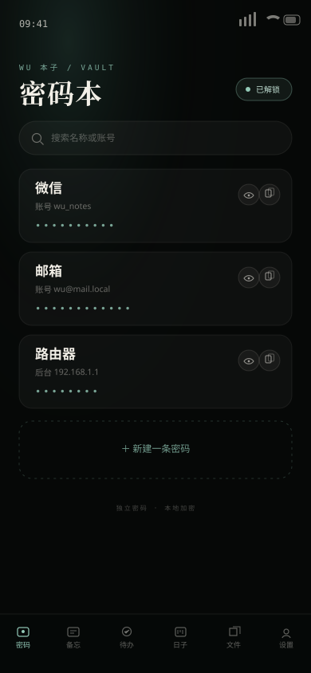
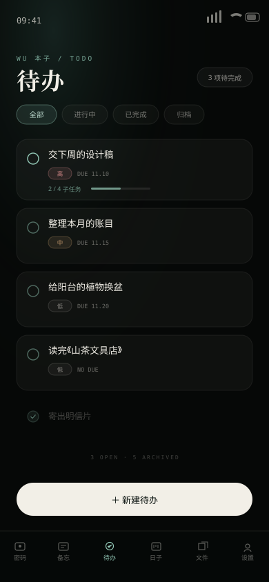
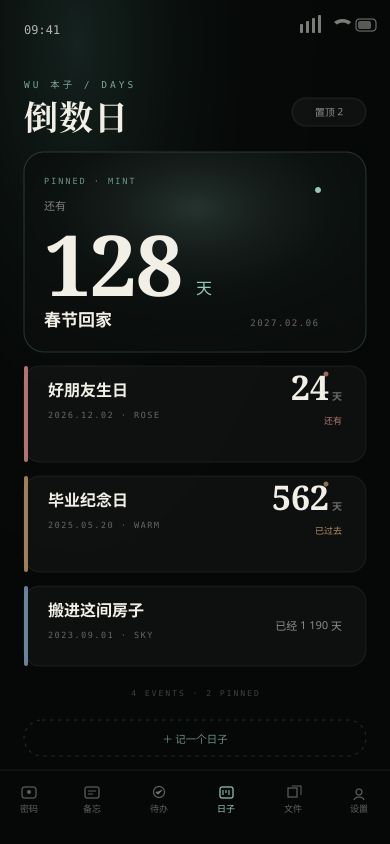

/ 01
密码本 · 一把独立的锁
密码本有自己的一把密码，与本子其他部分分开。条目默认以掩码显示，点眼睛才展开； 一键复制到剪贴板，关闭页面后重新上锁。密码只保存在本机。
local-first · 无需账号 · 零广告 · 六个抽屉
把密码、备忘、待办、日子与文件，收进一本安静的本子。
数据只留在本机 —— 没有账号、没有广告、没有一条联网请求。
打开，就能用。
自动识别 Android / Windows

01 — 它是什么
WU本子是一本装在浏览器里的本子。密码本、备忘录、待办、倒数日、文件库， 一共 六个抽屉，全部在本机打开。断网、飞行模式、关掉 Wi-Fi，它照样一页不少地工作。
左侧是抽屉，右侧是桌面。手机与电脑上，都只保留最浅的一层——从入口到内容，最多两步。
独立密码解锁，条目默认掩码，点一下眼睛才看得见。

优先级、截止时间、子任务，勾掉一件是一件。

未来的日子和过去的纪念日，都替你记着天数。
密码 · 备忘 · 待办 · 日子 · 文件
没有会员、没有付费版、没有激活码，也没有一个 AI 入口。六个抽屉，一次给全。
密码本有自己的一把密码，与本子其他部分分开。条目默认以掩码显示，点眼睛才展开； 一键复制到剪贴板，关闭页面后重新上锁。密码只保存在本机。
标题与正文、标签、搜索与置顶。想到什么写下来，按标签归档，常用的一直在最上面。
勾选完成，设置优先级与截止日期，拆成子任务。做完的收进归档，不打扰眼前。
未来的倒数和过去的纪念日，都替你算好天数，置顶与颜色标签一眼分清； 照片、文档、音频从本地导入，在站内预览、重命名、删除，不上传任何服务器。
三套主题、三档字号。夜间写字用深墨，白天翻看用米白，怎么舒服怎么来。
没有服务器，没有账号，没有同步。你的密码、备忘、日子与文件，都留在这台设备里。
WUKU · local-first notebook
它不会要求你登录，也不会把数据发到任何地方。清空浏览器数据之前， 记得先把重要的内容备份出去；换一台设备，就是翻开另一本空白的本子。
06 — 获取
装进手机与电脑，或者直接在浏览器里翻开。不用注册、不用登录； 数据各自留在各自的设备里，互不相扰。建议先设一把密码本的锁，再开始写。
APK 安装前需在系统设置里允许「安装未知来源应用」；Windows 包解压后， .exe 要与同目录的 .dll 和 data 文件夹放在一起，单独移动 exe 无法启动。
密码本使用独立密码；文件保存在浏览器 IndexedDB，不支持时自动回退到本地存储。清除站点数据会一并清空内容。
LOCAL-FIRST 无账号 · 无广告 · 无 AI 入口 数据不离开设备 · 断网可用 · 静态站
打开 WU本子v1.0.0 · 6 drawers